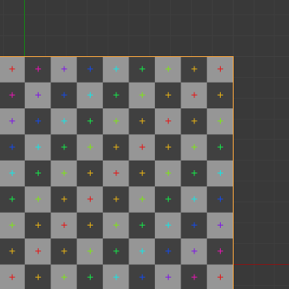
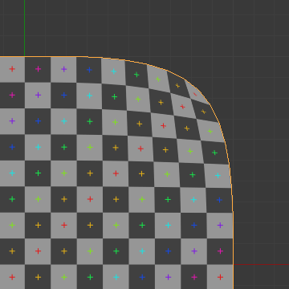
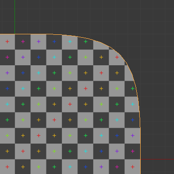
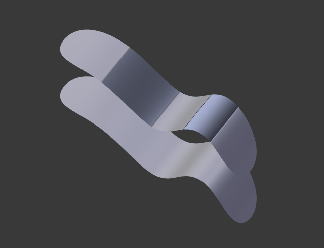

Модифікатор «Підподіл Поверхні» -- Subdivision Surface Modifier¶
The Subdivision Surface Modifier is used to split the faces of a mesh into smaller faces giving a smooth appearance. Using this modifier, enables you to model complex smooth surfaces with simple, low-vertex meshes. This allows modeling of high resolution meshes without the need to save and maintain huge amounts of data and it gives a smooth organic look to the object.
Цей процес створює віртуальну геометрію, що генерується не-руйнівним способом без модифікування оригінальної сіті, але яка може конвертована за допомогою кнопки Apply у реальну геометрію, яка далі вже може бути редагована.
Також, як і для решти Модифікаторів, порядок виконання цього модифікатора має важливе значення для його результату. Про це дивіться документацію тут -- modifier stack.
Майте на увазі, що модифікатор -- це інша операція, ніж Згладжене Відтінення -- Smooth Shading. Ви можете бачити відмінність між ними на ілюстрації нижче.

Рівні підподілення від 0 до 3, без та зі Smooth Shading.
Mẹo
Модифікатор Subdivision Surface не дозволяє вам правити нову підподілену геометрію без його застосування перед цим, що дає змогу робити модифікатор «Багатороздільність» -- Multiresolution Modifier (у режимі ліпки).
Опції¶

Modifier's panel.
- Тип -- Type
Ця перемикальна кнопка дозволяє вам вибирати алгоритм підподілення:
- Катмул-Кларк -- Catmull-Clark
- Стандартна опція, підподіляє та згладжує поверхні. Відповідно до його сторінки Вікіпедії -- Wikipedia page, «довільна на вигляд формула була вибрана Катмулом та Кларком скоріше на основі естетичного вигляду результатних поверхонь, а не шляхом математичного виведення».
- Просто -- Simple
- Тільки підподіляє поверхні без будь-якого згладження (так сама, як операція «Спеціальне > Підподіл» -- у режимі правки Edit Mode). Може використовуватися, наприклад, для збільшення роздільності базової сіті при використанні карт зміщення (displacement maps).
- Підподіли -- Subdivisions
Рекурсивно додає більше геометрії. Детальніше про рахунок полігонів дивіться підрозділ Performance Considerations.
- Огляд -- View
- Кількість рівнів підподілення, показуваного у 3D Огляді.
- Зображ, Рендер -- Render
- Кількість разів підподілення, показуваного на рендерах.
Правильна комбінація цих устав дозволить вам зберігати швидкий та легкий приблизний вигляд вашої моделі при взаємодії з нею у 3D та використовувати версію з вищою якістю при рендерингу.
Mẹo
Будьте обережні, щоб не задавати значення підподілів View вище, ніж значення підподілів Render, що означатиме, що 3D Огляд буде мати вищу якість, ніж рендер.
- Опції
- Підподіл UV-т -- Subdivide UVs
- При увімкненні, карти UV також будуть підподілятися (наприклад, Blender буде додавати «віртуальні» координати для усіх під-граней, створених цим модифікатором).
Без Підподілу поверхні.
Subdivide UVs вимкнуто.
Subdivide UVs увімкнуто.
- Оптимальний Показ -- Optimal Display
- При прорисі каркасу цьому об'єкта проводи нових підподілених ребер будуть пропускатися (прорисовуються тільки ребра оригінальної геометрії).
- Opensubdiv
- Дивіться підрозділ OpenSubdiv.
{kind=link}
{kind=link}
{kind=link}
OpenSubdiv¶
При увімкненні OpenSubdiv розрахування цього модифікатора буде відбуватися на пристрої обчислення -- compute device. Для вмикання OpenSubdiv ви повинні спершу вибрати найшвидший пристрій обчислення в Уподобаннях Користувача -- User Preferences. У більшості випадків найкраща продуктивність буде досягатися при використанні GLSL. У результаті продуктивність даного модифікатора буде набагато вище, що чудово підходить для анімацій.
Xem thêm
Для отримання додаткових відомостей про OpenSubdiv читайте ці примітки випуску -- Release Notes.
Покращення продуктивності¶
Щоб використовувати максимальну продуктивність з OpenSubdiv вимагаються наступні речі:
- Модифікатор підподілу поверхні повинен бути останнім у стеку модифікаторів -- modifier stack.
- Перед ним не повинно бути модифікаторів, які змінюють топологію сіті з плином часу.
- Інші об'єкти не повинні використовувати геометрію сіті з увімкненим OpenSubdiv.
Керування¶
Підподілення типу Catmull-Clark округлює краї і це часто те, що ви не хочете. Існує кілька рішень, що дозволять вам керувати підподіленням.
Виважені складки на ребрах¶
Виважені складки на ребрах для підподілених поверхонь дозволяють вам змінювати спосіб, який модифікатор Subdivision Surface підподіляє геометрію для надання її краям, ребрам згладженого або різкого вигляду.
A subdivided cube with creased edges.
Вагомість складки виділених ребер можна змінювати на панелі Transform регіону Properties N, або використовуючи скорочення Shift-E та рухаючи мишею ближче чи дальше від виділених ребер для коригування такої вагомості складки. Вищі значення роблять ребро «сильнішим» і більш стійким до ефекту згладжування підподілом поверхонь.
Петлі Ребер -- Edge Loops¶

Subdivision Level 2 cube, the same with an extra Edge Loop, and the same with six extra Edge Loops.
Модифікатор Subdivision Surface демонструє, чому добра, чиста топологія є настільки важливою. Як ви можете бачити на цій ілюстрації, модифікатор Subdivision Surface має суттєвий вплив на стандартний Куб. Допоки ви не додасте додаткові Петлі (за допомогою Ctrl-R), його форма є майже не впізнаваною як куб.
Сіть з обміркованою топологією буде мати хороше розміщення Петель Ребер, яке дозволить розміщувати більше таких Петель (або вилучати їх за допомогою X ) для керування гостротою/згладженістю результатної сіті.
Міркування щодо продуктивності -- Performance Considerations¶
Вищі рівні підподілення означають більше вершин, а більше вершин означає більше використовуваної пам'яті (як відео пам'яті для показу (VRAM), так і системної пам'яті RAM для рендерингу). Blender потенційно може падати або зависати, якщо ви не маєте достатньо пам'яті.
При використанні вищих рівнів підподілення з відеокартою, що має низький загальний обсяг VRAM, деякі частини геометрії будуть візуально зникати. Ваша сіть буде фактичною недоторканою, оскільки рендер генерується, використовуючи дані об'єкта Object Data (навіть якщо вони не можуть бути показані вашою відеокартою).
Mẹo
Для підвищення продуктивності в оглядвікні спробуйте увімкнути OpenSubdiv або, якщо ви використовуєте рендерер Cycles розгляньте можливість використання адаптивного підподілення -- Adaptive Subdivision.
Клавіатурні скорочення¶
Для швидкого додання модифікатора Subdivision Surface до одного чи більше об'єктів, виділіть його/їх та натисніть Ctrl-1. Це додасть модифікатор «Підподіл Поверхні» з кількістю рівнів підподілу для огляду Subdivisions: View як 1.
Ви можете також використовувати інші числа, як Ctrl-2, Ctrl-3 тощо, для додання модифікатора Subdivision Surface з відповідною такому числу кількістю підподілів для огляду. При цьому кількість підподілів для рендера Subdivisions: Render буде завжди задаватися як 2.
Якщо об'єкт вже має доданий для нього модифікатор Subdivision Surface, то натискання такого скорочення просто змінить кількість рівнів підподілу огляду для нього, замість додання ще одного модифікатора.
Відомі обмеження¶
Non-Contiguous Normals¶
Система підподілу Blender'а продукує чудові згладжені підподілені сіті, але будь-яка підподілена грань (тобто будь-яка менша грань, створена цим алгоритмом з одиничної грані оригінальної сіті), спільно використовує загальну орієнтацію нормалі оригінальної грані.

Порівняння хороших і поганих нормалей. |

Огляд збоку картинки зліва. |
{kind=link}
Різкі зміни напрямків нормалей можуть продукувати потворні чорні виїмки, навіть якщо ці перевернуті нормалі не є проблемою власне для форми об'єкта.
Швидкий спосіб виправлення цього -- використання операції Blender'а «Перерахувати Нормалі» -- Recalculate Normals у режимі правки Edit Mode.
Якщо ви все ще має те деякі потворні чорні виїмки, то вам доведеться вручну перевернути такі нормалі -- Manually Flip the Normals.
{kind=link}